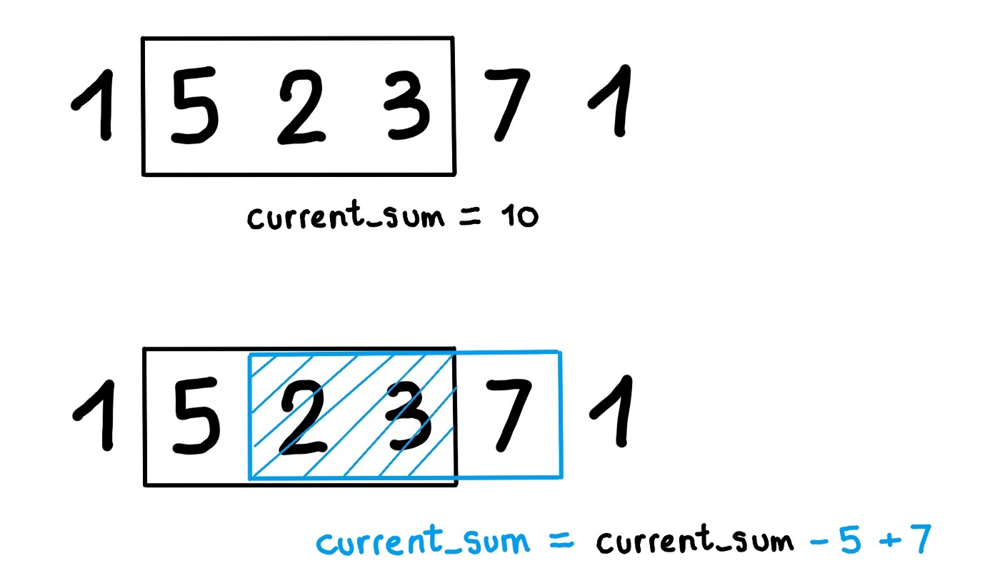
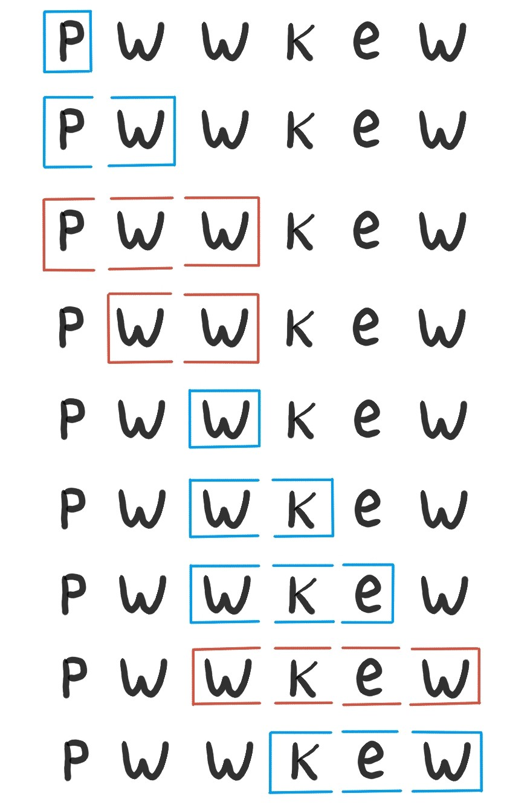

Strings and Array coding problems
Contents
Strings and Array coding problems¶
Sliding window problems¶
Sliding sum 
Sliding unique substring 
Longest Substring with At Most K Distinct Characters (Hard)¶
My Solution:
public int lengthOfLongestSubstringKDistinct(String s, int k) {
if (s == null || s.length() == 0 || k == 0) return 0;
// sliding window with a char counter
int left = 0;
int right = 0;
int result = 0;
Map<Character, Integer> map = new HashMap<>();
while (right < s.length()) {
map.put(s.charAt(right), map.getOrDefault(s.charAt(right), 0)+1);
if (map.size() <= k) {
result = Math.max(result, right-left+1);
} else {
while (map.size() > k && left < right) {
map.put(s.charAt(left), map.get(s.charAt(left))-1);
if (map.get(s.charAt(left)) == 0) {
map.remove(s.charAt(left));
}
left++;
}
}
right++;
}
return result;
}
Longest Substring Without Repeating Characters¶
My Solution:
public int lengthOfLongestSubstring(String s) {
int left = 0;
int right = 0;
Set<Character> set = new HashSet<>();
int max = 0;
while (right < s.length()) {
char c = s.charAt(right);
if (set.contains(c)) {
while (left < right) {
char leftChar = s.charAt(left);
set.remove(leftChar);
left++;
if (leftChar == c) break;
}
}
set.add(c);
max = Math.max(max, right-left+1);
right++;
}
return max;
}
Subarrays with K different integers¶
Solution:
understand the solution!
This problem will be a very typical sliding window, if it asks the number of subarrays with at most K distinct elements.
Just need one more step to reach the folloing equation:
exactly(K) = atMost(K) - atMost(K-1)
public int subarraysWithKDistinct(int[] A, int K) {
return atMostK(A, K) - atMostK(A, K - 1);
}
int atMostK(int[] A, int K) {
int i = 0, res = 0;
Map<Integer, Integer> count = new HashMap<>();
for (int j = 0; j < A.length; ++j) {
if (count.getOrDefault(A[j], 0) == 0) K--;
count.put(A[j], count.getOrDefault(A[j], 0) + 1);
while (K < 0) {
count.put(A[i], count.get(A[i]) - 1);
if (count.get(A[i]) == 0) K++;
i++;
}
res += j - i + 1;
}
return res;
}
Max consecutive ones with at most K 0 -> 1 transitions¶
My Solution:
public int longestOnes(int[] A, int K) {
if (A == null || A.length == 0) return 0;
int zeroes = 0;
int max = 0;
int left = 0;
int right = 0;
while (right < A.length) {
if (A[right] == 0) zeroes++;
while (zeroes > K && left <= right) {
if (A[left] == 0) zeroes--;
left++;
}
max = Math.max(max, right-left+1);
right++;
}
return max;
}
Iteration problems with context¶
Remove comments (single line and block) in give source lines¶
Solution:
public List<String> removeComments(String[] source) {
boolean inBlock = false;
StringBuilder newline = new StringBuilder();
List<String> ans = new ArrayList();
for (String line: source) {
int i = 0;
char[] chars = line.toCharArray();
if (!inBlock) newline = new StringBuilder();
while (i < line.length()) {
if (!inBlock && i+1 < line.length() && chars[i] == '/' && chars[i+1] == '*') {
inBlock = true;
i++;
} else if (inBlock && i+1 < line.length() && chars[i] == '*' && chars[i+1] == '/') {
inBlock = false;
i++;
} else if (!inBlock && i+1 < line.length() && chars[i] == '/' && chars[i+1] == '/') {
break;
} else if (!inBlock) {
newline.append(chars[i]);
}
i++;
}
if (!inBlock && newline.length() > 0) {
ans.add(new String(newline));
}
}
return ans;
}
Sorted arrays¶
Merge 2nd sorted array into first sorted array (big enough with empty values)¶
Solution:
public void merge(int[] nums1, int m, int[] nums2, int n) {
int p1 = m-1;
int p2 = n-1;
int i = m+n-1;
while (p1>=0 && p2>=0) {
nums1[i--] = (nums1[p1] >= nums2[p2]) ? nums1[p1--] : nums2[p2--];
}
System.arraycopy(nums2, 0, nums1, 0, p2+1);
}
void merge(int[] nums1, int m, int[] nums2, int n) {
int i = m - 1, j = n - 1, k = m + n - 1;
while(i >= 0 && j >= 0) {
if(nums1[i] < nums2[j]) {
nums1[k--] = nums2[j--];
} else {
nums1[k--] = nums1[i--];
}
}
while(j >= 0) {
nums1[k--] = nums2[j--];
}
}
Find an element in a rotated sorted array¶
Solution:
Find the sorted half.
If target lies in the sorted half, binary search into that otherwise BS into other half.
public int search(int[] nums, int target) {
int start = 0;
int end = nums.length - 1;
while (start <= end) {
int mid = start + (end - start) / 2;
if (nums[mid] == target) {
return mid;
}
if (nums[mid] >= nums[start]) {
if (target >= nums[start] && target <= nums[mid]) {
end = mid - 1;
} else {
start = mid + 1;
}
} else {
if (target >= nums[mid] && target <= nums[end]) {
start = mid + 1;
} else {
end = mid - 1;
}
}
}
return -1;
}
sqrt using Binary Search¶
Solution:
public int mySqrt(int x) {
int start = 0;
int end = Integer.MAX_VALUE;
if (x == 0 || x == 1) {
return x;
}
while (start <= end) {
int mid = start + (end - start) / 2;
// `(x / mid)` avoids integer overflow caused by `(mid * mid)`
if (mid <= x / mid && (mid + 1) > x / (mid + 1)) {
return mid;
}
if (mid > x / mid) {
end = mid;
} else {
start = mid + 1;
}
}
return -1;
}
Search Index of target or where target is to be inserted in O(log(N))¶
public int searchInsert(int[] nums, int target) {
return binarySearch(nums, target, 0, nums.length-1);
}
private int binarySearch(int[] nums, int target, int l, int r) {
// edge base-case (target not present)
if (target <= nums[l]) return l;
if (target > nums[r]) return r+1;
int mid = l + (r-l) / 2;
// match base-case
if (nums[mid] == target) return mid;
// further backtrack left or right
if (nums[mid] > target) return binarySearch(nums, target, l, mid-1);
return binarySearch(nums, target, mid+1, r);
}
Remove duplicates from a sorted array in-place, return final length¶
Okay to leave garbage values after resultant length
Shift unique values left-wards
public int removeDuplicates(int[] nums) {
int uniqueIndex = 1;
int j = 1;
while (j < nums.length) {
if (nums[j] > nums[uniqueIndex-1]) {
nums[uniqueIndex++] = nums[j];
}
j++;
}
return uniqueIndex;
}
Check Valid mountain array - strictly increasing followed by strictly decreasing¶
public boolean validMountainArray(int[] arr) {
if (arr.length < 3) return false;
boolean checkUp = true;
for (int i=1; i<arr.length; i++) {
if (arr[i] == arr[i-1]) return false;
if (checkUp && arr[i] < arr[i-1]) {
if (i == 1) return false;
checkUp = false;
} else if (!checkUp) {
if (arr[i] > arr[i-1]) return false;
}
}
return !checkUp;
}
Find Index in a top-bottom and left-right sorted matrix¶
Sorted from left -> right
Sorted from top -> bottom
Logic O(m+n):
Start from Top-Right
Match Every cell
If target is more -> go down, else go left.
public boolean searchMatrix(int[][] matrix, int target) {
if(matrix == null || matrix.length < 1 || matrix[0].length <1) {
return false;
}
int col = matrix[0].length-1;
int row = 0;
while(col >= 0 && row <= matrix.length-1) {
if(target == matrix[row][col]) {
return true;
} else if(target < matrix[row][col]) {
col--;
} else if(target > matrix[row][col]) {
row++;
}
}
return false;
}
Unsorted Arrays¶
Inserting into an array with sufficient space¶
Iterate backwards to avoid overwriting values (since, we are shifting right)
arr[i+1] = arr[i]
Shifting array elements left-wards¶
Iterate from left-to-right
Shifting array elements right-wards¶
Iterate from right-to-left
Move Zeroes to right¶
public void moveZeroes(int[] nums) {
int nonZero = 0, i = 0;
while (i < nums.length) {
while (i < nums.length && nums[i] == 0) {
i++;
}
if (i == nums.length) break;
nums[nonZero++] = nums[i++];
}
for (int j=nonZero; j<nums.length; j++) {
nums[j] = 0;
}
}
Missing number from a range [1-N] of list of size N¶
public List<Integer> findDisappearedNumbers(int[] nums) {
List<Integer> res = new ArrayList<>();
for (int i=0; i<nums.length; i++) {
int numAsIndex = Math.abs(nums[i])-1;
nums[numAsIndex] = -1 * Math.abs(nums[numAsIndex]);
}
for (int i=0; i<nums.length; i++) {
if (nums[i] > 0) res.add(i+1);
}
return res;
}
Water/area under bars (only 2 not total water can be trapped)¶
Solution:
public int maxArea(int[] height) {
int maxarea = 0, l = 0, r = height.length - 1;
while (l < r) {
maxarea = Math.max(maxarea, Math.min(height[l], height[r]) * (r - l));
if (height[l] < height[r])
l++;
else
r--;
}
return maxarea;
}
Sum of 3 elements in an array = K {similarly for sum of 2}¶
Solution:
public List<List<Integer>> threeSum(int[] nums) {
Arrays.sort(nums);
List<List<Integer>> res = new ArrayList<>();
for (int i = 0; i < nums.length && nums[i] <= 0; ++i)
if (i == 0 || nums[i - 1] != nums[i]) {
twoSum(nums, i, res);
}
return res;
}
void twoSum(int[] nums, int i, List<List<Integer>> res) {
var seen = new HashSet<Integer>();
for (int j = i + 1; j < nums.length; ++j) {
int complement = -nums[i] - nums[j];
if (seen.contains(complement)) {
res.add(Arrays.asList(nums[i], nums[j], complement));
while (j + 1 < nums.length && nums[j] == nums[j + 1])
++j;
}
seen.add(nums[j]);
}
}
Rotate a String¶
Solution:
Reverse 0-L, reverse 0-K, reverse K-L (best).
Brute force: call shift1 (simple prev keeping algo) K times.
Cyclic replace
Merge overlapping intervals¶
Solution:
public int[][] merge(int[][] intervals) {
LinkedList<int[]> merged = new LinkedList<>();
Arrays.sort(intervals, (x, y) -> x[0] - y[0]);
for (int[] interval : intervals) {
if (merged.isEmpty() || merged.getLast()[1] < interval[0]) {
merged.add(interval);
}
merged.getLast()[1] = Math.max(merged.getLast()[1], interval[1]);
}
return merged.toArray(new int[merged.size()][]);
}
Container with most water¶
Solution:
public int maxArea(int[] height) {
if (height == null || height.length < 2) return 0;
if (height.length == 2) return Math.min(height[0], height[1]);
int water = 0;
int i = 0;
int j = height.length-1;
while (i < j) {
water = Math.max(water, (j-i) * Math.min(height[i], height[j]));
if (height[i] < height[j]) {
i++;
} else {
j--;
}
}
return water;
}
Rotate the Image (matrix)¶
public void rotate(int[][] matrix) {
// Reverse Rows (top to bottom)
// a | b | c g | h | i
// --+---+-- --+---+--
// d | e | f ==> d | e | f
// --+---+-- --+---+--
// g | h | i a | b | c
for (int i=0; i<matrix.length/2; i++) {
for (int j=0; j<matrix[i].length; j++) {
swap(matrix, i, j, matrix.length-i-1, j);
}
}
// A[i, j] = A[j, i]
for (int i=0; i<matrix.length; i++) {
// note 'j' start from 'i'
for (int j=i; j<matrix[i].length; j++) {
swap(matrix, i, j, j, i);
}
}
}
private void swap(int[][] matrix, int aI, int aJ, int bI, int bJ) {
int temp = matrix[aI][aJ];
matrix[aI][aJ] = matrix[bI][bJ];
matrix[bI][bJ] = temp;
}